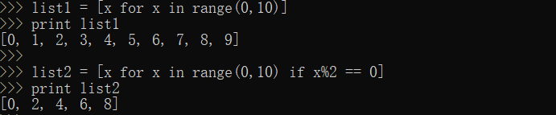
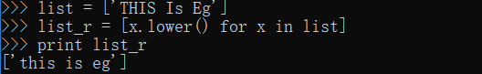

列表推导式
列表切片 LISTNAME[START:STOP:STEP]
列表推导式会以现有列表为基础创建新的列表。对列表推导式部分给出两个例子：一个数字类型的，一个string类型的。要理解：列表推导式一定要基于要给现有存在的列表。

语法分析：
list1临时声明变量x，x后面跟了一个for循环，迭代range(0,10)返回的每一个值，这些东西都被放进了方括号里。当print输出的时，返回是0到9.
list2做了一个过滤，使用”if x%2 ==0”，得到范围内的偶数，这个过滤的工作方式是，如果条件语句为真，那么x就会被包含进结果列表里。
把列表字符串元素编程小写：

lambda和lambda操作符
Lambda 用法
lambda可以快速构建简单函数。平时创建函数实，都需先定义，然后设计函数返回内容；Lambda表达式可以简化这一过程，将内容浓缩到一行代码。
1 | def fun(x): |
等价于Lambda方法：1
2funlambda = lambda x: x*2
funlambda(2)
lambda表达式必须被赋值给某个变量才能发挥作用。
使用lambda表达式: 首先输入lambda，然后是需要输入的参数，最后是返回的值。
Lambda 操作符
- fliter() - 用来过滤原有的list,并把过滤结果放进list中
- map() -同时对list里所有的元素进行操作，并以列表方式给出返回值
- reduce() - 可以对列表顺序执行算术运算
注：这些操作符也可以被单独当成函数使用，但是通常它们会和lambda表达式一起使用。
filter操作符
filter操作符可以用来过滤现有列表里的内容，并把符合要求的放进新列表里。1
2>>> filter(lambda x: x%2==0,range(0,10))
[0, 2, 4, 6, 8]
filter(lambda表达式提供过滤条件, 要进行过滤的现有列表)
filter操作符返回一个符合条件的列表类型
map操作符
使用map操作符，可以把列表里的所有元素都进行某一个操作。1
2>>> map(lambda x: x*2, range(0,10))
[0, 2, 4, 6, 8, 10, 12, 14, 16, 18]
range(0,10)所返回的列表中的每一个元素都被乘上了2.
reduce操作符
reduce操作符对列表进行顺序的迭代.1
2
3
4// 把列表里的所有元素相加:
>>> list = range(0,10)
>>> reduce(lambda x,y: x + y,list)
45
reduce操作的时候，会从0开始，0+1得到1，然后1+2得到3，然后3+3得到6，6+4得到10……